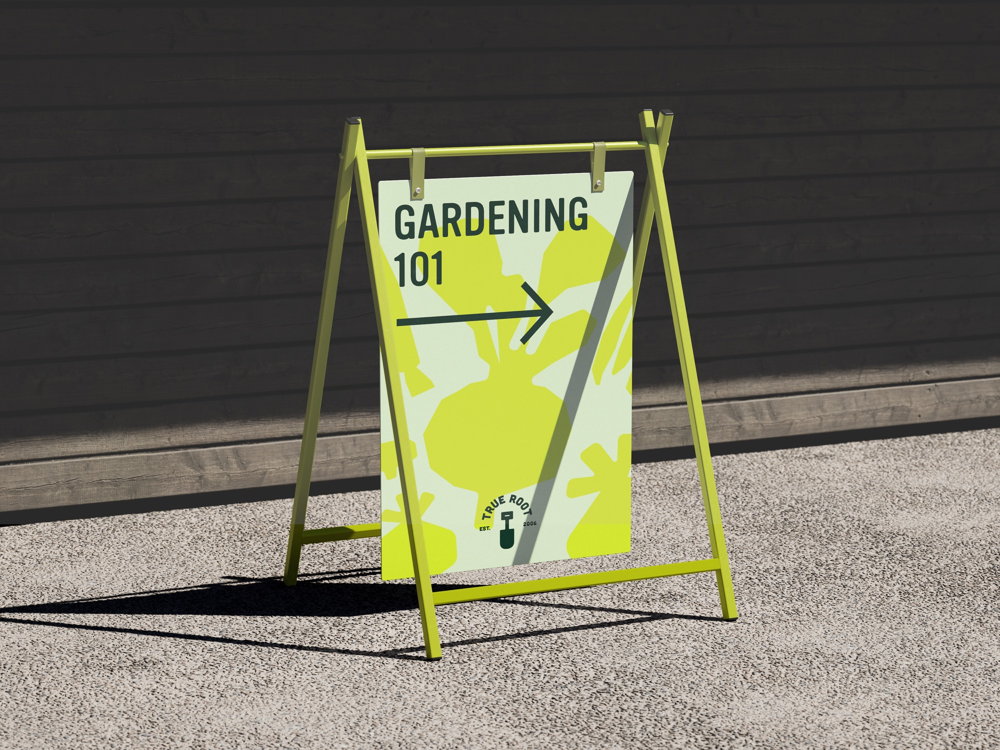
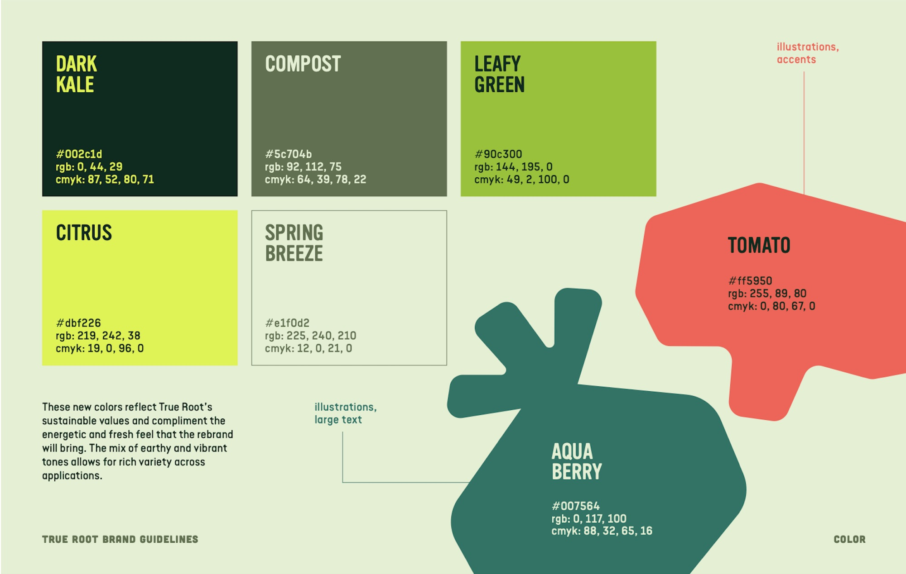
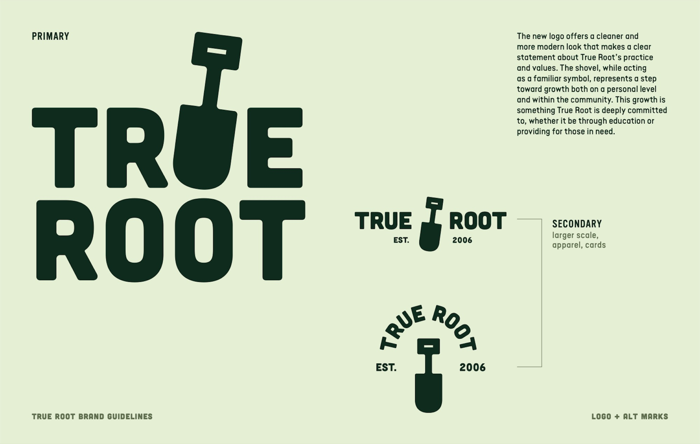
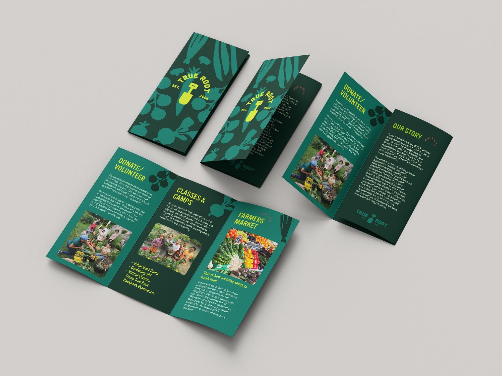
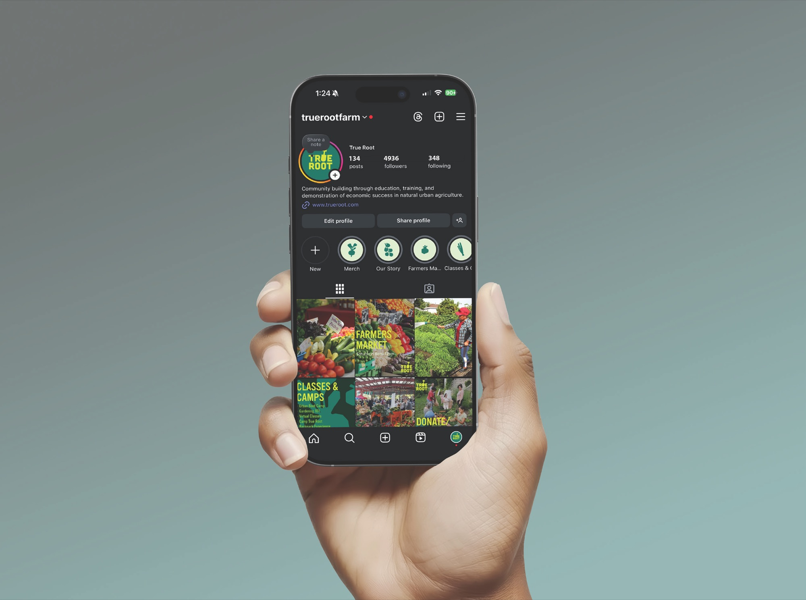
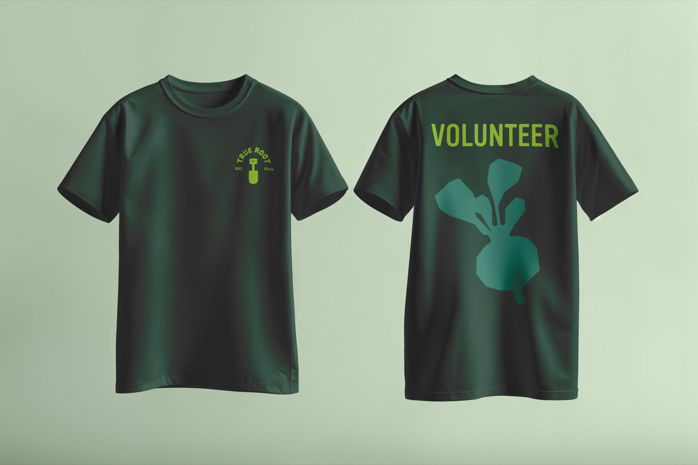
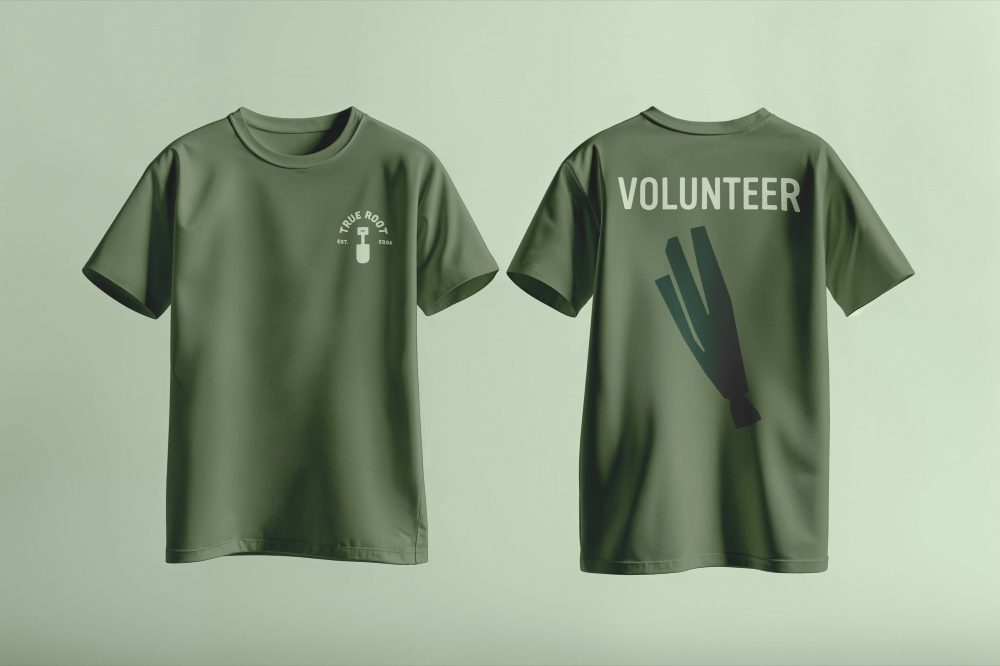
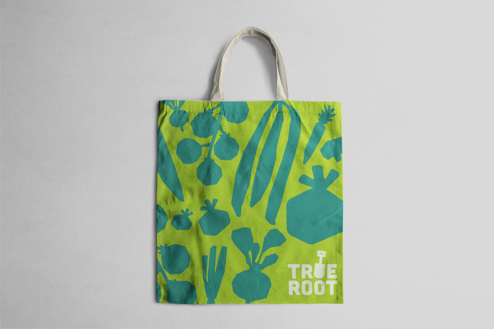

True Root
A rebrand for an Atlanta-based urban farm. Whit Taylor built the brand system; I brought it to life across Instagram content, brochures, tote bags, and merchandise.
Overview
True Root is a rebrand I worked on with Whit Taylor for an Atlanta-based urban farm. Whit built the brand system — logo, color palette, and typography — and I focused on bringing it to life across applications: Instagram content, brochures, tote bags, and merchandise. The result is an identity that feels as rooted in the community as the farm itself.
Type & Color
Whit also developed the typographic system and color palette that shape the rest of the identity. The typography pairs bold display type with a more neutral body typeface, creating a clear hierarchy that feels energetic but still easy to read. The color palette pulls from natural and produce-inspired tones—deep greens, bright citrus, and warm reds—which help give the brand a fresh, lively feel while still staying grounded in the idea of sustainability and agriculture.
The Logo
Whit led the development of the logo, creating a mark that feels simple, modern, and closely tied to the work of the farm itself. The design incorporates a shovel form within the wordmark, turning a familiar farming tool into a symbol of growth and shared effort. The mark was refined to stay clean and adaptable, allowing it to work across everything from small digital graphics to larger printed pieces and merchandise while still clearly representing True Root’s mission.
My Role
My role focused on taking Whit’s brand system and applying it across a range of real-world assets. Using the established logo, typography, and color palette, I designed materials like brochures, social media posts, T-shirts, tote bags, and signage. The goal was to see how the identity could adapt across different formats while still feeling consistent and recognizable. Each piece required slightly different priorities—some needed to communicate information clearly, while others were more about visibility or merchandise—but the core visual language stayed the same. Through these applications, the brand started to move beyond a set of guidelines and into something that could realistically live in the spaces where the farm interacts with its community.
Reflection
This project was a strong exercise in communication and collaboration. Working closely with Whit meant regularly discussing how the brand should look, feel, and function across different contexts, which helped ensure that the applications stayed true to the original system. It pushed me to think more carefully about how design decisions translate across mediums and how consistency builds recognition over time. Through the process, I gained a deeper understanding of how a cohesive visual system develops—not just through logos and guidelines, but through the way those elements are applied, adapted, and communicated in real-world situations.